Rapport de recette du 11 novembre 2026
- 7 problème(s)
- 0 bloquant(s)
- 7 majeur(s)
- 0 mineur(s)
Télécharger les tickets (CSV) · Résultats bruts (JSON)
Les contrôles automatiques repèrent une partie des problèmes seulement : ils ne remplacent ni un audit RGAA complet, ni un test avec un lecteur d'écran, ni la relecture des contenus.
Synthèse
| Page | HTTP | Bloquant | Majeur | Mineur | Poids | Requêtes |
|---|---|---|---|---|---|---|
| Projets IA – Caroline Camilleri, cheffe de projet digital | 200 | 0 | 1 | 0 | 151 Ko | 12 |
| Énergie Pro – Gestion de flotte (prototype) | 200 | 0 | 3 | 0 | 682 Ko | 8 |
| Page d'offre énergie B2B et formulaire guidé – Projet de démonstration | 200 | 0 | 0 | 0 | 80 Ko | 7 |
| Caroline Camilleri · Proposition marketing B2B épargne salariale et retraite | 200 | 0 | 2 | 0 | 195 Ko | 10 |
| Quel film ce soir ? | 200 | 0 | 0 | 0 | 258 Ko | 10 |
| Souscription UGC Illimité | 200 | 0 | 1 | 0 | 193 Ko | 6 |
| Les métiers du végétal : carrousel en cinq visuels – Projet de démonstration | 200 | 0 | 0 | 0 | 100 Ko | 8 |
| Du cahier des charges aux tickets de recette – Projet de démonstration | 200 | 0 | 0 | 0 | 47 Ko | 4 |
Détail par page
Projets IA – Caroline Camilleri, cheffe de projet digital
https://ccamilleri-ux.github.io/portfolio-ia/ · HTTP 200 · 151 Ko · 12 requêtes · langue « fr »
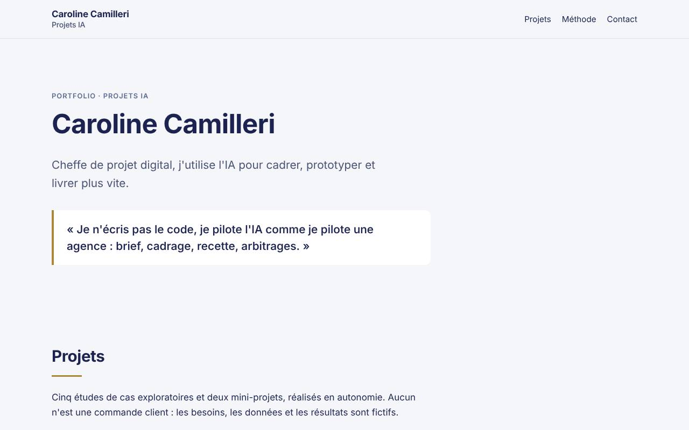
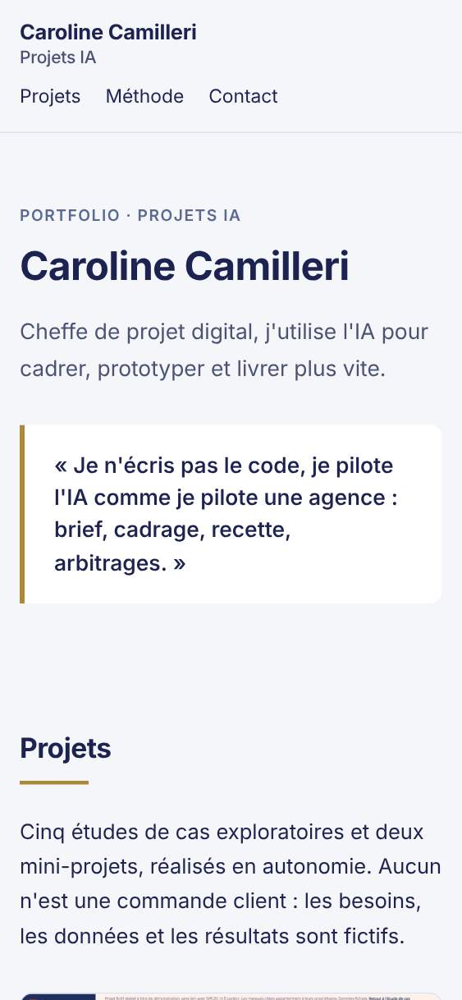
| Gravité | Type | Règle | Description | Élément |
|---|---|---|---|---|
| Majeur | Lien | Lien cassé (404) | Le lien mène à une page introuvable. | https://ccamilleri-ux.github.io/portfolio-ia/projets/kit-recette/index.html |
Énergie Pro – Gestion de flotte (prototype)
https://ccamilleri-ux.github.io/portfolio-ia/projets/siplec-flotte/index.html · HTTP 200 · 682 Ko · 8 requêtes · langue « fr »
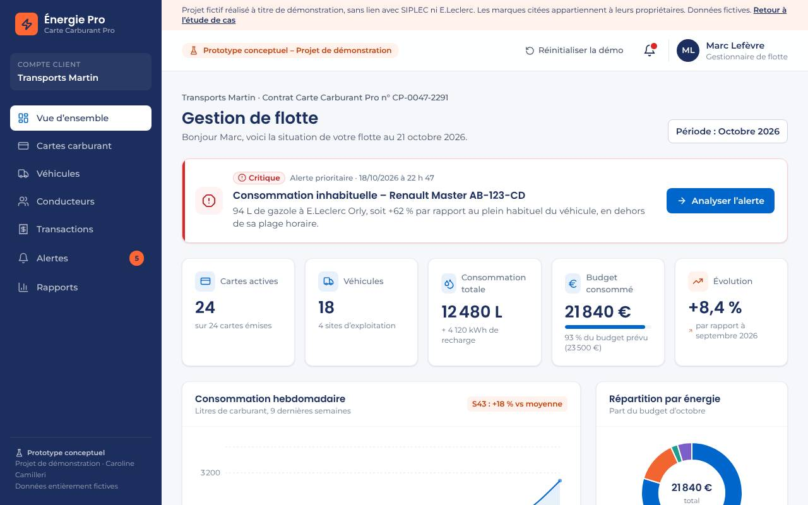
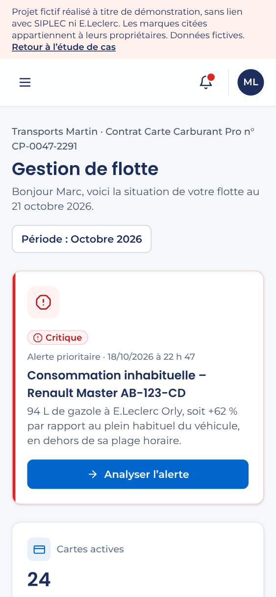
| Gravité | Type | Règle | Description | Élément |
|---|---|---|---|---|
| Majeur | Accessibilité | color-contrast | Les éléments doivent avoir un contraste de couleurs suffisant | .uppercase |
| Majeur | Accessibilité | svg-img-alt | Les éléments svg avec un rôle 'img' ont un texte alternatif | path[name="Gazole"] | path[name="SP95-E10"] | path[name="E85"] (+1) |
| Majeur | Mobile | Défilement horizontal à 320 px | Le contenu dépasse la largeur de l'écran. | 46 px de trop |
Page d'offre énergie B2B et formulaire guidé – Projet de démonstration
https://ccamilleri-ux.github.io/portfolio-ia/projets/siplec-offre-energie/index.html · HTTP 200 · 80 Ko · 7 requêtes · langue « fr »
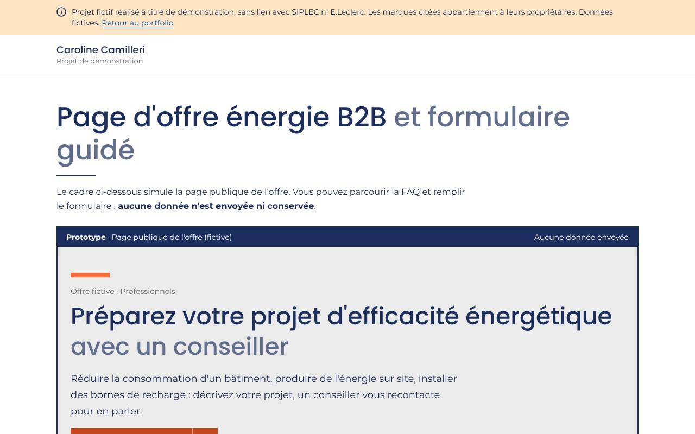
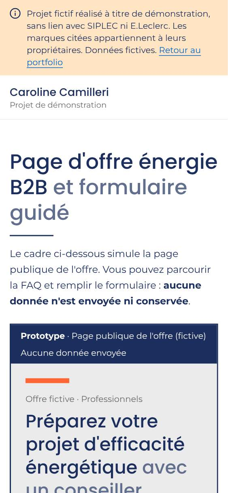
Aucun problème détecté par les contrôles automatiques.
Caroline Camilleri · Proposition marketing B2B épargne salariale et retraite
https://ccamilleri-ux.github.io/portfolio-ia/projets/amundi/index.html · HTTP 200 · 195 Ko · 10 requêtes · langue « fr »
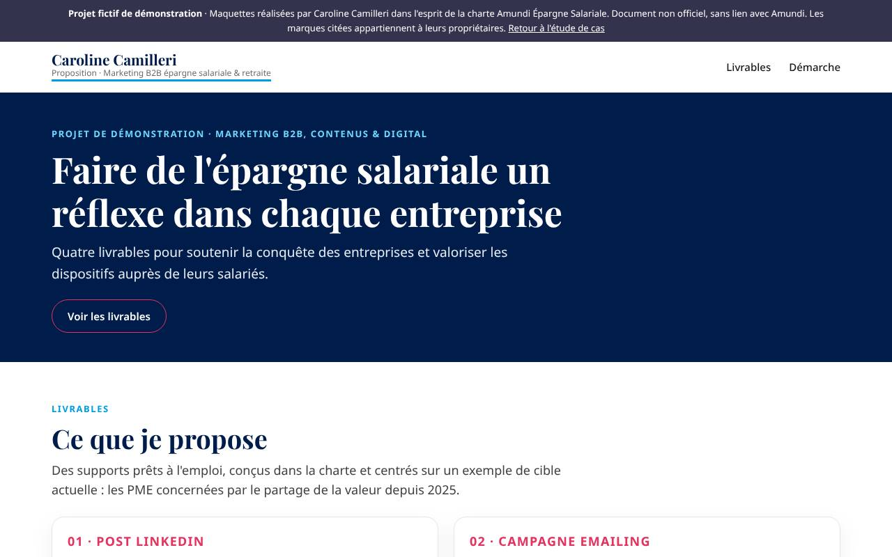
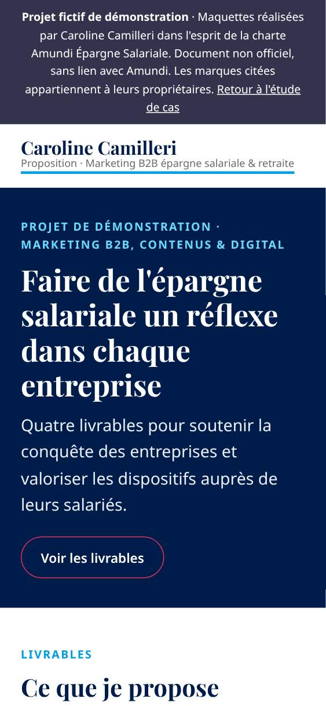
| Gravité | Type | Règle | Description | Élément |
|---|---|---|---|---|
| Majeur | Accessibilité | color-contrast | Les éléments doivent avoir un contraste de couleurs suffisant | #livrables > .wrap > .eyebrow | article:nth-child(1) > .pbody > .plabel | article:nth-child(2) > .pbody > .plabel (+3) |
| Majeur | Accessibilité | scrollable-region-focusable | Vérifier que les régions défilantes sont accessibles au clavier | .thumb-car > .car[data-car=""] > .car-track |
Quel film ce soir ?
https://ccamilleri-ux.github.io/portfolio-ia/projets/ugc/index.html · HTTP 200 · 258 Ko · 10 requêtes · langue « fr »
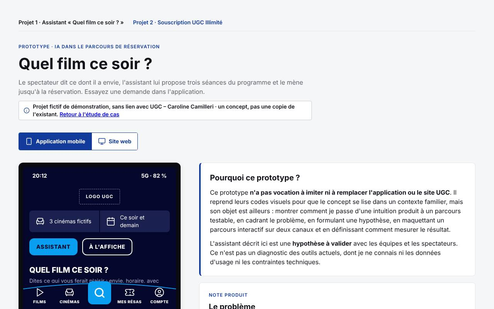
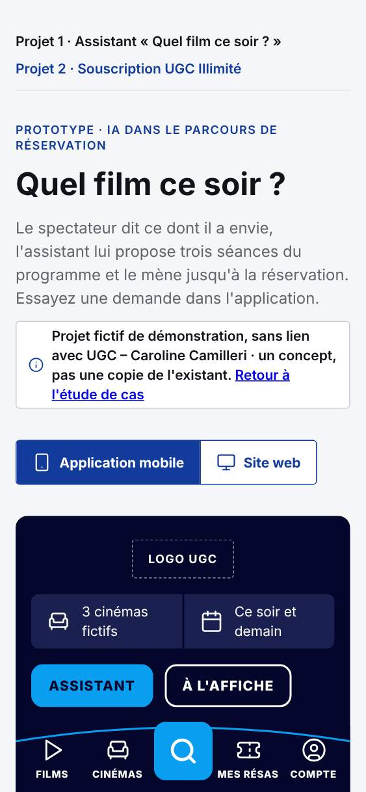
Aucun problème détecté par les contrôles automatiques.
Souscription UGC Illimité
https://ccamilleri-ux.github.io/portfolio-ia/projets/ugc/illimite.html · HTTP 200 · 193 Ko · 6 requêtes · langue « fr »
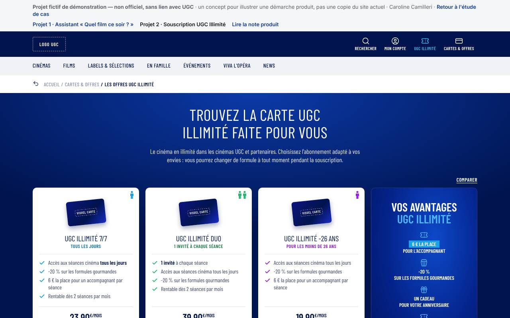
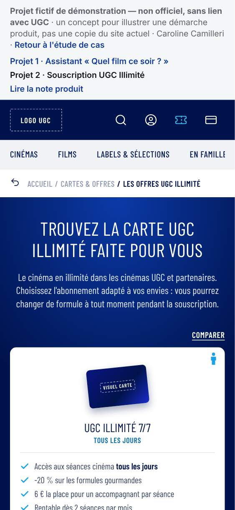
| Gravité | Type | Règle | Description | Élément |
|---|---|---|---|---|
| Majeur | Accessibilité | color-contrast | Les éléments doivent avoir un contraste de couleurs suffisant | ol > li:nth-child(2) | ol > li:nth-child(3) | .hl (+7) |
Les métiers du végétal : carrousel en cinq visuels – Projet de démonstration
https://ccamilleri-ux.github.io/portfolio-ia/projets/valhor/index.html · HTTP 200 · 100 Ko · 8 requêtes · langue « fr »
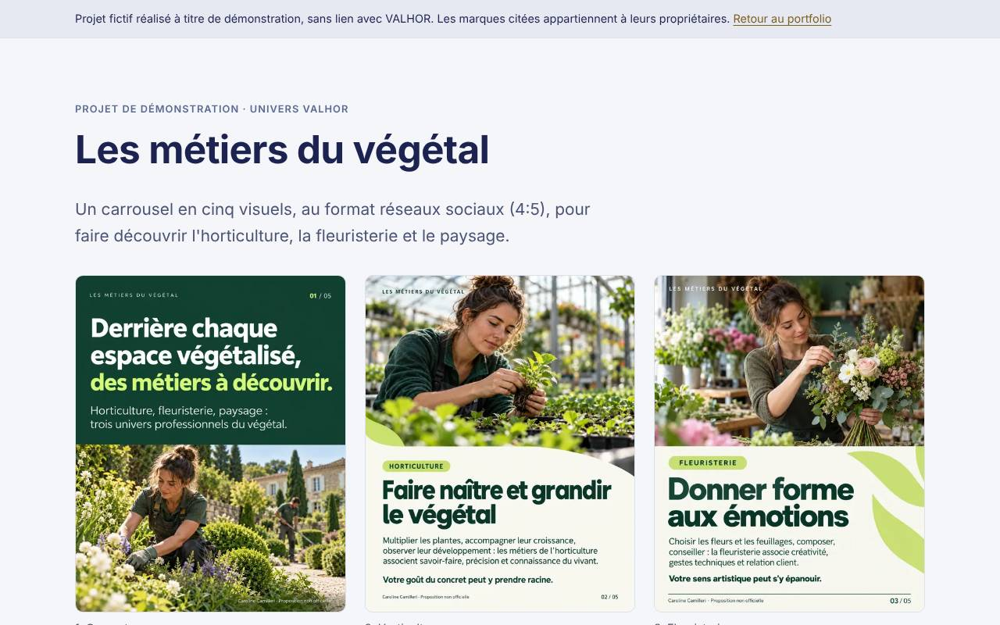
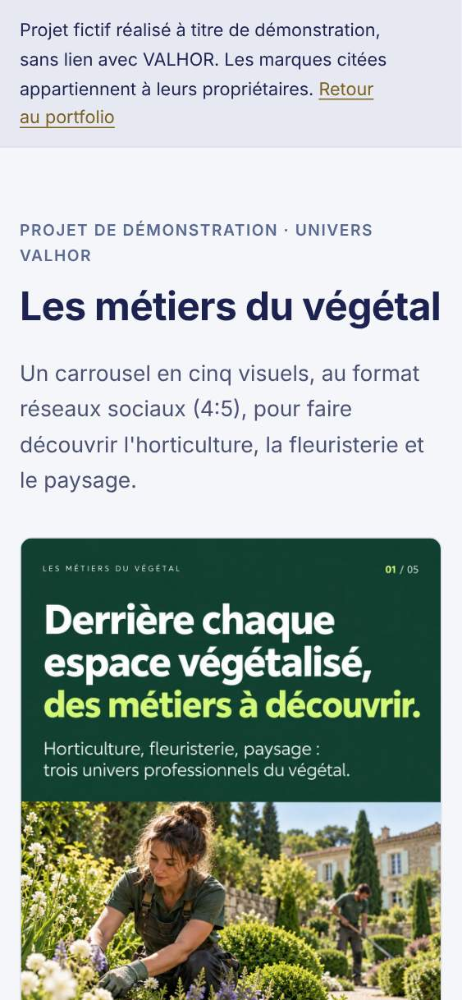
Aucun problème détecté par les contrôles automatiques.
Du cahier des charges aux tickets de recette – Projet de démonstration
https://ccamilleri-ux.github.io/portfolio-ia/projets/cahier-des-charges/index.html · HTTP 200 · 47 Ko · 4 requêtes · langue « fr »
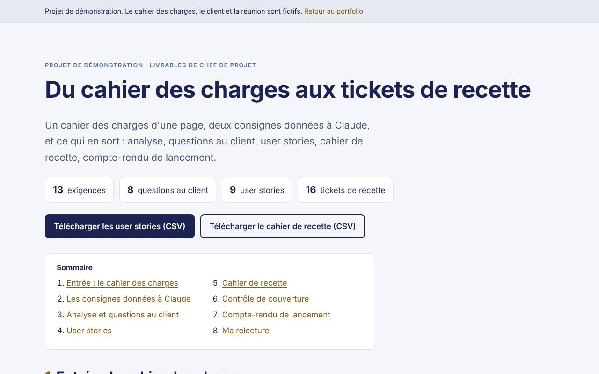
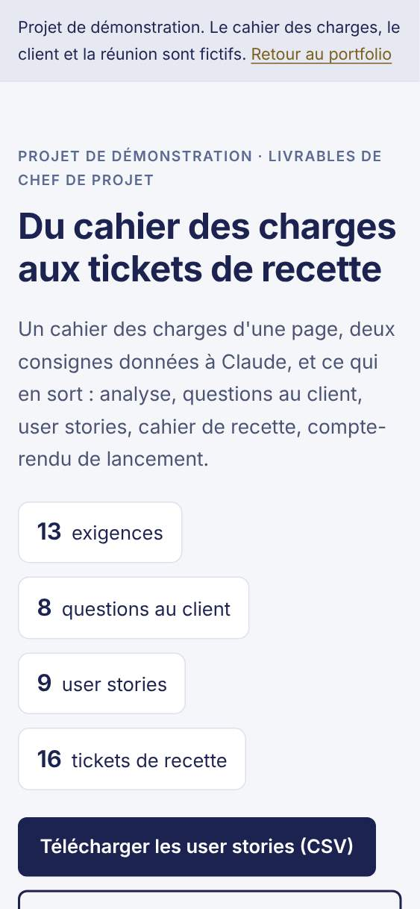
Aucun problème détecté par les contrôles automatiques.